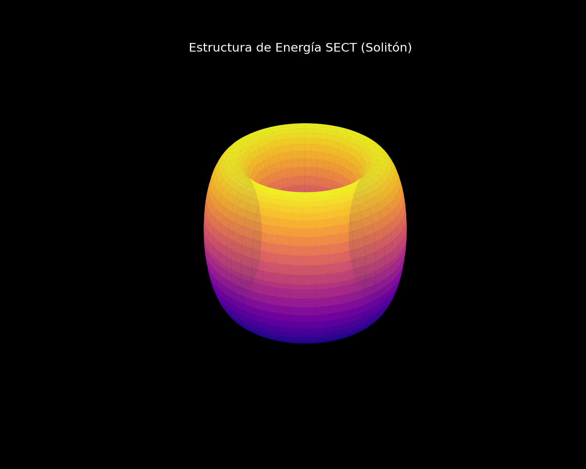
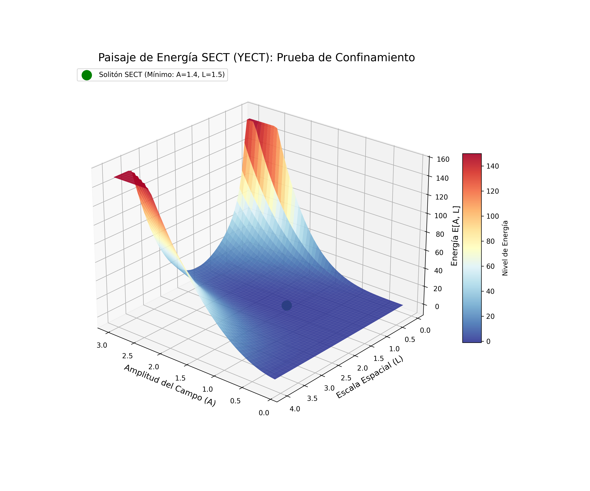
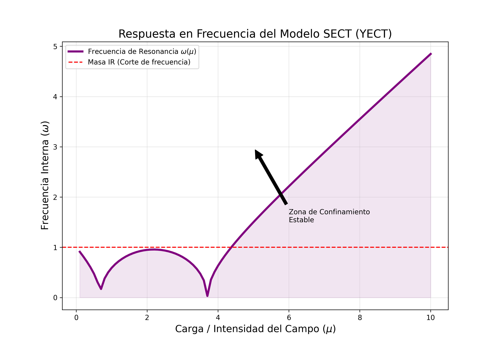

Declaración Ontológica: SETT es una teoría clásica efectiva autónoma que investiga si configuraciones topológicas no lineales de un campo vectorial transversal pueden generar estructuras compactas de energía finita en vacío.
La teoría no depende del mecanismo de Higgs ni del sector de color. En este marco, el vacío se modela como un medio capaz de sostener estados torsionales estacionarios bajo dinámica no lineal.
El objeto central es una configuración compacta $\mathbf A_*$ que minimiza el funcional de energía bajo restricción de norma. La morfología típica presenta estructura cuasi-toroidal.

Figura 1: Densidad de energía estacionaria obtenida numéricamente.

Figura 2: Paisaje energético $E(A,L)$ mostrando mínimo local bajo restricción.
Utilizando valores experimentales del protón como referencia de escala, el modelo produce soluciones estacionarias cuya energía total es compatible con la escala hadrónica.
| Magnitud | Valor Experimental | Resultado SETT | Interpretación |
|---|---|---|---|
| Masa efectiva | 938 MeV | $E[\mathbf A_*] \sim 10^3$ MeV | Auto-energía confinada |
| Radio característico | ~0.84 fm | $L_* \sim 0.8$ fm | Equilibrio no local / UV |
| Gap espectral | — | $\omega_{\min} = \sqrt{m^2}$ | Estabilidad lineal |

Figura 3: Curva $\omega(\mu)$ mostrando existencia de gap infrarrojo.
Conclusión: SETT proporciona un marco variacional consistente donde configuraciones electromagnéticas no lineales pueden exhibir confinamiento clásico de energía y estabilidad local. La formalización completa de existencia y estabilidad orbital se desarrolla en los capítulos técnicos.